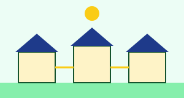
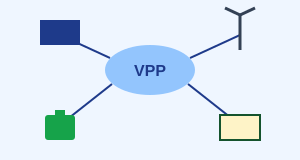
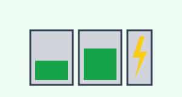
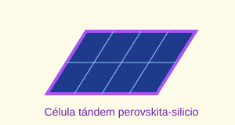

Las tecnologías habilitadoras digitales no solo mejoran a las empresas energéticas que ya existen: también crean mercados nuevos que hace quince años no existían. Estos son los que más nos interesan, con un ejemplo real de cada uno.
1. Comunidades energéticas y autoconsumo compartido

Descripción: grupos de vecinos, pymes o ayuntamientos que se unen para producir su propia energía renovable (por ejemplo, con paneles en el tejado de un polideportivo) y repartirla entre ellos. Necesitan plataformas digitales para medir y repartir la energía de forma justa.
THD que lo generan: IoT (contadores inteligentes), nube, Big Data y blockchain.
Ejemplo real: Som Energia, cooperativa española de energía renovable sin ánimo de lucro con miles de socios, que promueve proyectos de generación colectiva y autoconsumo.
2. Centrales eléctricas virtuales (VPP)

Descripción: una central virtual une con software miles de instalaciones pequeñas (placas solares, baterías, cargadores de coche eléctrico, motores industriales) y las gestiona como si fueran una sola central grande, que puede vender energía o ayudar a equilibrar la red.
THD que lo generan: IoT, nube, IA (para decidir en cada momento qué hace cada equipo) y ciberseguridad.
Ejemplo real: Next Kraftwerke, empresa alemana que opera una de las mayores centrales eléctricas virtuales de Europa.
3. Almacenamiento de energía con baterías gestionadas por IA

Descripción: grandes baterías que guardan la energía solar del mediodía para usarla por la noche. Su rentabilidad depende de un software que decide cuándo cargar y cuándo descargar según los precios y la previsión de producción.
THD que lo generan: IA, Big Data, IoT y gemelo digital.
Ejemplo real: Fluence, empresa (creada por Siemens y AES) que fabrica sistemas de almacenamiento con baterías y el software con IA para gestionarlos.
4. Inspección y mantenimiento de renovables con drones e IA
Descripción: con miles de parques eólicos y plantas solares envejeciendo, ha nacido un mercado de empresas que inspeccionan con drones y analizan las imágenes con IA para detectar grietas en palas o paneles calientes, sin que nadie tenga que subir.
THD que lo generan: robótica (drones), IA (visión artificial), nube y conectividad.
Ejemplo real: SkySpecs, empresa estadounidense que inspecciona palas de aerogeneradores con drones autónomos y gestiona los datos en su plataforma.
THD emergente que nos interesa: materiales avanzados (perovskitas)

De las THD emergentes (nanotecnología, micro/nanoelectrónica, biotecnología industrial, fotónica, materiales avanzados y fabricación avanzada), la que más encaja con nuestro sector son los materiales avanzados, en concreto las células solares de perovskita.
Por qué: los paneles de silicio actuales están cerca de su límite de eficiencia. Añadiendo una capa de perovskita encima (célula "tándem") se aprovecha mejor la luz y se produce más energía en el mismo espacio, lo que es clave cuando el terreno o el tejado son limitados.
Mercado emergente al que apunta: la integración fotovoltaica en edificios (fachadas, ventanas y tejados ligeros que generan energía) y las plantas solares de alta eficiencia.
Ejemplo real: Oxford PV, empresa británica surgida de la Universidad de Oxford que ya fabrica y comercializa paneles tándem perovskita-silicio.
Nuestra apuesta: el piloto VatioLab Tándem para medir en condiciones reales cuánto más producen estos paneles.
Otra THD emergente que vigilamos es la biotecnología industrial, por la producción de hidrógeno verde y biogás a partir de residuos.
Tabla THD → mercado → oportunidad de negocio para Ecovatio
| THD | Mercado | Oportunidad de negocio para Ecovatio |
|---|---|---|
| Nube + IoT + blockchain | Comunidades energéticas | Vender VatioComunidad a ayuntamientos y cooperativas que están montando su comunidad y necesitan repartir la energía |
| IoT + IA + nube | Centrales eléctricas virtuales | Conectar con VatioSense las instalaciones de nuestros clientes para que puedan participar en una VPP y ganar ingresos extra |
| IA + gemelo digital | Almacenamiento con baterías | Usar VatioTwin para dimensionar baterías y VatioForecast para decidir cuándo cargarlas |
| Robótica + IA | Inspección y mantenimiento con drones | Ofrecer VatioBot a plantas medianas que no pueden permitirse un equipo propio de drones |
| Ciberseguridad | Adaptación a NIS2 del sector energético | Cuantas más instalaciones se conectan, más demanda de VatioShield |
| Materiales avanzados (emergente) | Integración fotovoltaica en edificios y paneles de alta eficiencia | Ser pioneros con el piloto VatioLab Tándem y asesorar a constructoras |
| Blockchain | Certificación de energía 100 % renovable hora a hora | Ofrecer VatioChain a industrias que quieren demostrar que su consumo es limpio |